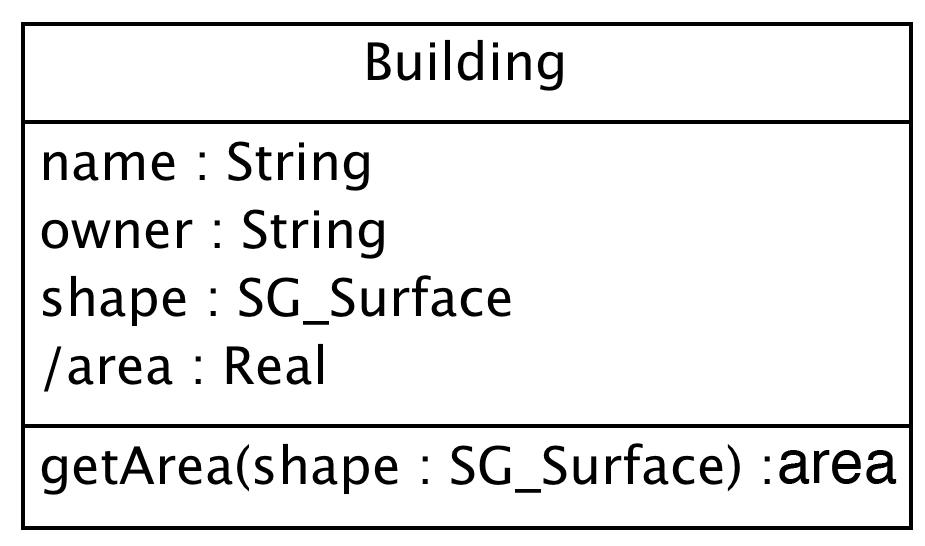

Application Schema Designer
Introduction
You will design an application schema on this page. Application schema is a formal description of the model conceptualizing real world phenomena included in the universe of discourse which is the target of your research or mission. Figure 1 is an example of simple application schema. It expresses that "River" has its name, shape and administrator as attributes, and you can get depth of river if you input the position.

Figure 1. An example of simple application schema written by UML
You need to know the rules of formal description of a model. Gittok uses the graphic language called UML (Unified Modeling Language) for the formal description. Usually "language" is used for the description of text. In case of graphic language, diagram is used to make communication with others.
UML is widely used in the scene of information system development today as the schema language for object oriented modeling. We also describe the rules how to define application schema. In other words, we use UML to describe the schema for application schemas.
You should know at least how to describe "class diagram". You will see many UML class diagrams in gittok. These diagrams are written using UML Editor called ArgoUML. You can easily design your schema with this free software. It is rather old, because the UML versions 1.4 and the latest version is Version 2. However the rules for class diagram is almost the same. Off course, you can use other UML tools. And you can get and read UML text books and tips on the web.
to be continued.